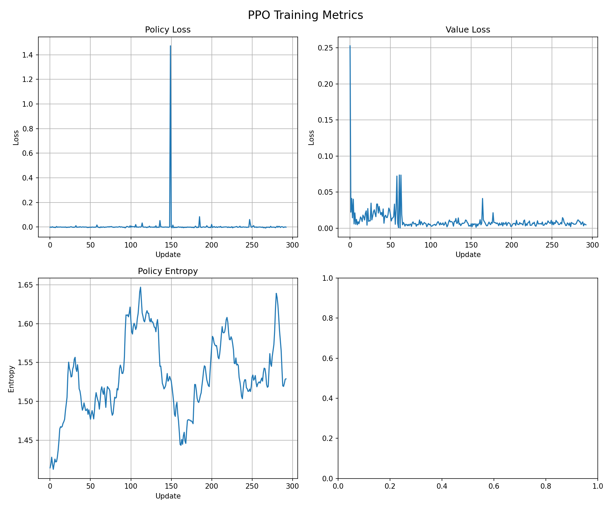

PPO Refactoring: From CleanRL-Style to Stable Training¶
This page documents the refactoring of the PPO implementation, the problems encountered, and the lessons learned about continuous action spaces in traffic control environments.
Motivation¶
The original PPO implementation used tanh-squashed Gaussian policies with manual action scaling and a hardcoded reward divisor (R /= 100). While functional, the code had several issues:
- Tanh squashing required a manual Jacobian correction for log-probabilities
- Action scaling from \([-1, 1]\) to \([-3, 3]\) was done outside the environment
- The reward divisor was a magic constant with no adaptive behavior
The goal was to modernize the PPO code following CleanRL conventions, which have been shown to improve training stability and reproducibility across standard benchmarks (MuJoCo, Atari, etc.).
The CleanRL-Style Refactoring¶
The refactoring applied the following changes:
Changes Made¶
| Component | Before | After (CleanRL) |
|---|---|---|
| Action output | tanh(sample), manual scale to \([-3, 3]\) |
Raw Gaussian sample, ClipAction wrapper |
| Log-probability | Gaussian log-prob with Jacobian correction | Plain Gaussian log-prob |
| Hidden activations | ReLU | tanh |
| Weight initialization | PyTorch defaults | Orthogonal init (std=\(\sqrt{2}\) for shared, 0.01 for actor, 1.0 for critic) |
| Log-std clamping | Clamped to \([-2.0, 0.5]\) | Unclamped |
| Reward handling | R /= 100 hardcoded |
NormalizeReward + TransformReward(clip to [-10, 10]) wrappers |
| Step API | 4-tuple (obs, reward, done, info) |
5-tuple via FourToFiveTupleWrapper |
Wrapper Chain¶
The refactored environment applies a chain of Gymnasium wrappers:
RingRoadEnv -> FourToFiveTupleWrapper -> ClipAction -> NormalizeReward -> TransformReward
- FourToFiveTupleWrapper: Bridges the 4-tuple
step()API to Gymnasium's 5-tuple(obs, reward, terminated, truncated, info)without modifying the base environment. - ClipAction: Clips actions to the environment's action space bounds \([-3, 3]\).
- NormalizeReward: Divides rewards by a running standard deviation for adaptive scaling.
- TransformReward: Clips normalized rewards to \([-10, 10]\) to prevent outliers.
Results: Unstable Training¶
The refactored version showed significantly worse training stability compared to the original.
Training Returns Comparison¶
Original (tanh squashing):

CleanRL-style (raw Gaussian + ClipAction):
The training curve showed frequent collapses throughout the entire run. Episodes that had been stable would suddenly drop to returns 5-10x worse, and the moving average never fully stabilized.
Vehicle Speed Tracking¶
Original:

CleanRL-style:
The CAV exhibited large speed overshoots (5-6 m/s above the head vehicle) and oscillatory tracking behavior, indicating the learned policy was applying overly aggressive accelerations.
Root Cause Analysis¶
The instability was traced to a feedback loop between the raw Gaussian policy and the NormalizeReward wrapper:
-
Raw Gaussian outputs extreme actions. Without tanh's natural bounding, the policy can produce acceleration values that swing abruptly between the full \(-3\) and \(+3\) m/s\(^2\) range. The
ClipActionwrapper hard-clips these, but provides zero gradient for out-of-bound outputs — the network cannot learn how far it overshot. -
Extreme actions cause collisions. Abrupt acceleration changes lead to unsafe following distances, triggering the \(-100\) safety penalty in the reward function.
-
Safety penalties destabilize
NormalizeReward. The large penalty shifts the running reward statistics, distorting the reward scale for subsequent episodes. -
Distorted rewards cause bad policy updates. The value function estimates become inaccurate, leading to poor advantage estimates and further policy degradation.
This cycle did not occur with tanh squashing because tanh naturally prevents extreme actions. The sigmoid-like shape means the network needs exponentially larger pre-activation values to push actions closer to the boundary, acting as an implicit regularizer.
Why CleanRL Conventions Didn't Transfer¶
CleanRL's raw Gaussian approach works well for environments like MuJoCo (HalfCheetah, Hopper, etc.) because:
- Smooth dynamics: Physics simulators have continuous, differentiable dynamics. An extreme action produces a proportionally bad outcome, not a discontinuous penalty.
- No hard safety penalties: MuJoCo rewards are typically smooth quadratic costs. There is no equivalent of the \(-100\) collision penalty that can destabilize reward normalization.
- Dense reward signal: Every step provides informative gradient information. In the ring road environment, the reward signal is sparser and dominated by the safety constraint.
The ring road environment has a discontinuous reward landscape (the \(-100\) safety penalty creates a cliff) that interacts poorly with reward normalization when the policy can produce extreme actions.
Final Implementation: Hybrid Approach¶
The final implementation keeps the beneficial CleanRL changes while restoring tanh squashing:
What Was Kept from CleanRL¶
- Orthogonal weight initialization with appropriate scales (std=\(\sqrt{2}\) for shared layers, 0.01 for actor, 1.0 for critic)
- tanh hidden activations instead of ReLU in shared layers
NormalizeReward+TransformRewardwrappers for adaptive reward scalingFourToFiveTupleWrapperfor Gymnasium 5-tuple API compatibility
What Was Reverted¶
- tanh action squashing restored — actions are squashed to \([-1, 1]\) then scaled by
max_accel - Jacobian correction for log-probabilities restored:
- Log-std clamping to \([-2.0, 0.5]\) restored to prevent exploration from becoming too large or too small
Action Scaling¶
The tanh output \(a_{\tanh} \in [-1, 1]\) is scaled to the acceleration range using simple multiplication:
action_scaled = action_tanh * max_accel # [-1, 1] * 3.0 -> [-3, 3]
This works because the action space is symmetric. The ClipAction wrapper remains in the chain as an additional safety net.
Results: Stable Training¶
Training Returns¶

The training curve converges by episode ~85 and remains stable, with only rare dips. The MA(10) shows consistent improvement without the periodic collapses seen in the CleanRL-style version.
Training Metrics¶

- Policy loss: Near zero with isolated spikes that recover quickly.
- Value loss: Drops from 0.25 to near 0, stable after update 100.
- Entropy: Healthy fluctuation around 1.5 — the policy maintains exploration without collapsing.
Vehicle Speed Tracking¶

The CAV tracks the head vehicle closely with minor overshoots (~1-2 m/s), comparable to the original implementation.
Key Takeaways¶
-
Environment characteristics matter more than "best practices." CleanRL conventions are well-tested on standard benchmarks but don't automatically transfer to environments with discontinuous reward functions and hard safety constraints.
-
Tanh squashing provides implicit regularization. Beyond bounding actions, tanh's saturating gradient naturally discourages extreme outputs. This is critical in environments where extreme actions have catastrophic consequences (collisions).
-
Reward normalization interacts with reward discontinuities.
NormalizeRewardworks best when the reward distribution is relatively smooth. Large outlier penalties (like the \(-100\) safety penalty) can destabilize the running statistics and corrupt the learning signal. -
Hybrid approaches can capture the best of both worlds. Orthogonal initialization and tanh activations from CleanRL improved training, while the original tanh squashing and log-std clamping provided the stability needed for this specific environment.
Hyperparameter Tuning¶
PPO hyperparameters can be overridden via Hydra on the command line:
uv run -m rl_mixed_traffic.ppo_train agent.lr=1e-4 agent.k_epochs=6 total_steps=800000
Key parameters to tune for this environment:
| Parameter | Default | Effect |
|---|---|---|
agent.lr |
3e-4 | Lower (1e-4) for smoother policy updates |
agent.k_epochs |
10 | Lower (4-6) to prevent overfitting per rollout |
agent.clip_epsilon |
0.2 | Lower (0.1-0.15) for tighter trust region |
rollout_steps |
2048 | Higher (4096) for more stable advantage estimates |
agent.batch_size |
64 | Higher (128-256) to reduce gradient noise |
total_steps |
600,000 | Higher (800k-1M) for more training time |